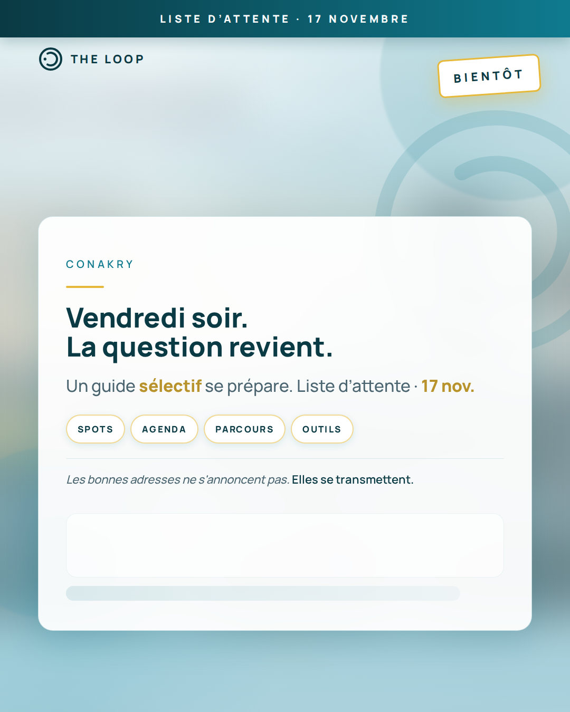

POST_3-11_feed-v2.png · fond seulement
Pas de bandeau teal en haut.
Pas de tampon BIENTÔT.
Pas des pills Spots / Agenda / Parcours / Outils.
Pas de ligne signature sous le texte.
POST_3-11_feed-PUBLIER-3nov.png · à poster

Bandeau Liste d’attente · 17 novembre.
Tampon BIENTÔT (or).
4 piliers blancs bordure or.
Signature en italique.